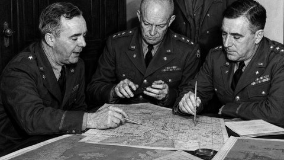
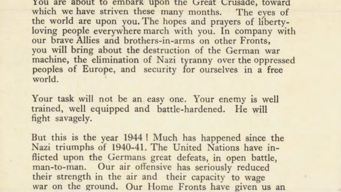
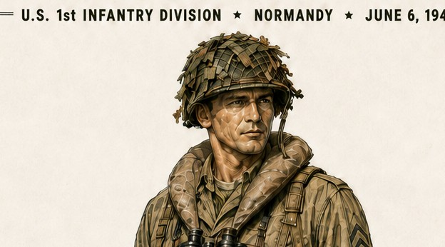
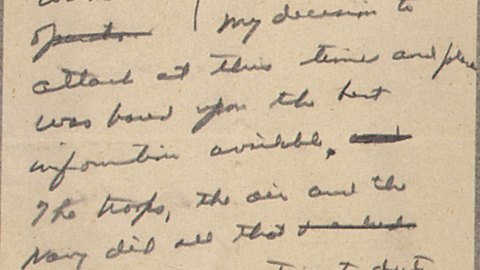
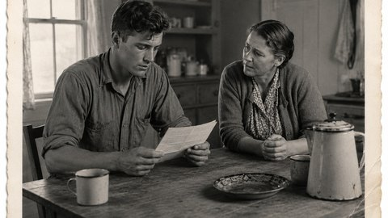
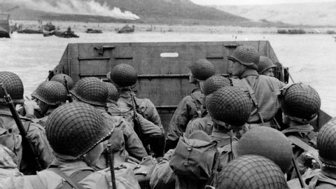

Choose a Part
Begin with Part 1 and continue through Part 9 in order.

PART 1Planning the Invasion of NormandyInformational Narrative
Open lesson →

PART 2Eisenhower’s D-Day OrderPrimary Documents · Order & Radio Broadcast
Open lesson →

PART 3A U.S. Soldier OutfitInteractive Equipment Exploration · D-Day Platoon Leader
Open lesson →

PART 4In Case of FailurePrimary Document · Military Orders
Open lesson →
ARCHIVAL FILM
PART 5Film FootagePrimary Sources · Historical Film Footage
Open lesson →

PART 6A Soldier’s Mom’s DiaryHistorical-Fiction Diary · Home-Front Perspective
Open lesson →

PART 7Invasion by WaterHistorical-Fiction Narrative · Sea-to-Shore Perspective
Open lesson →
PART 8Edward R. Murrow Reports on D-DayHistorical-Fiction Radio Broadcast · Developing Reports from June 6, 1944
Open lesson →
The Pins on the Map
PART 9ReflectionsHistorical-Fiction Reflection · Otto Frank Looking Back
Open lesson →
Optional Epilogue
A concluding look at how D-Day was remembered forty years later.
OPTIONAL EPILOGUEPresident Ronald Reagan — Remembering D-DayPrimary Source Extension · Commemorative Speech · Pointe du Hoc, June 6, 1984
Open epilogue →